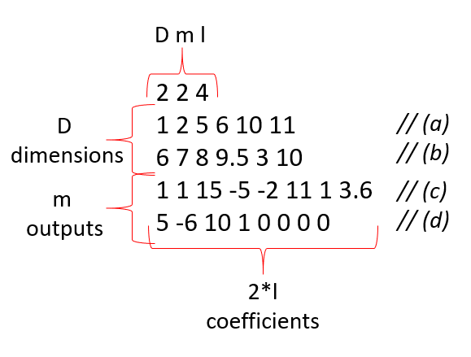

Compiling the Program
The following steps should be undertaken to run our code
- clone the repository with
git clone git@gitlab.epfl.ch:majoor/project-5-numerical-integration.git
- fetch the submodules (Eigen and Googletest) using
git submodule update --init
- build the executable using CMAKE
mkdir build
cd build
cmake ..
- run the executable
./integration
This code will produce the following output:
Configuring the Program
To run the program with different integrals and different domains of integration, the input file can be configured. An example of the format required is shown below:

The first line details the length of inputs the program should expect. The lines (a), (b), (c) and (d) are then read as follows:
- (a) first domain is between x=1 and x=2, y=5 and y=6 and the integration method undergoes 10 steps in the x direction and 11 steps in the y direction
- (b) first domain is between x=6 and x=7, y=8 and y=9.5 and the integration method undergoes 3 steps in the x direction and 10 steps in the y direction
- (c) first function output reads 1+1i + (15-5i)x + (-2+11i)y + (1+3.6i)x^2
- (d) second function output reads 5-6i + (19+1i)x + (0+0i)y + (0+0i)x^2
Typical Program Usage
[to be done]
Program Features
[to be done]
Tests
[to be done]